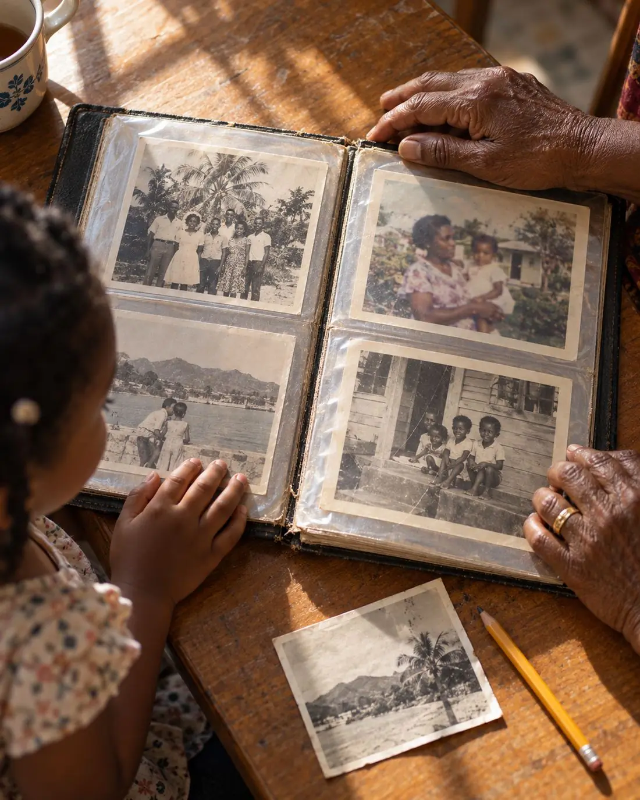
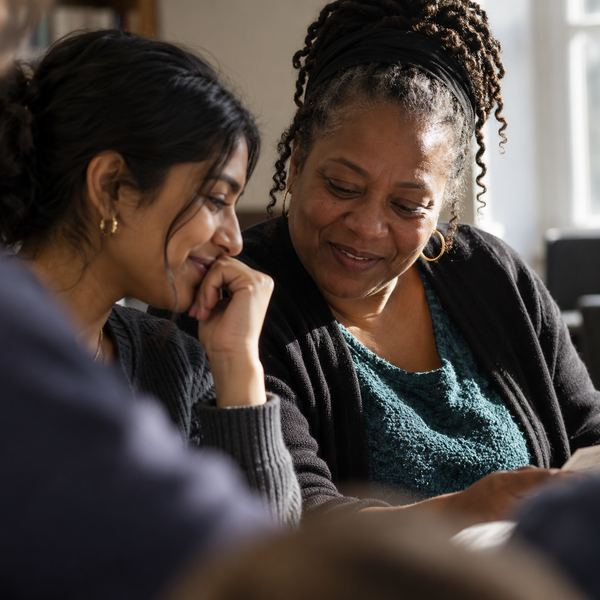
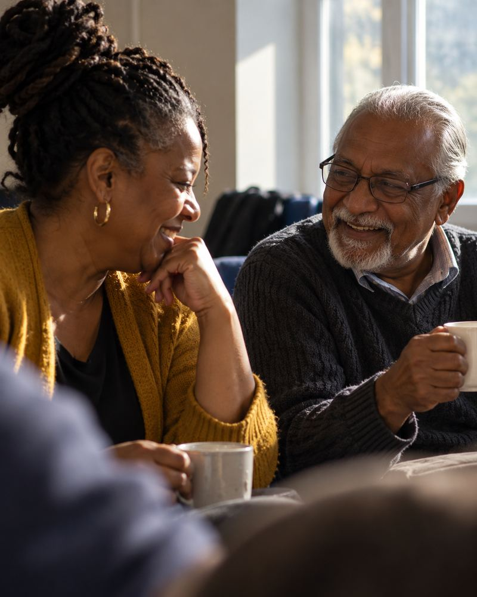
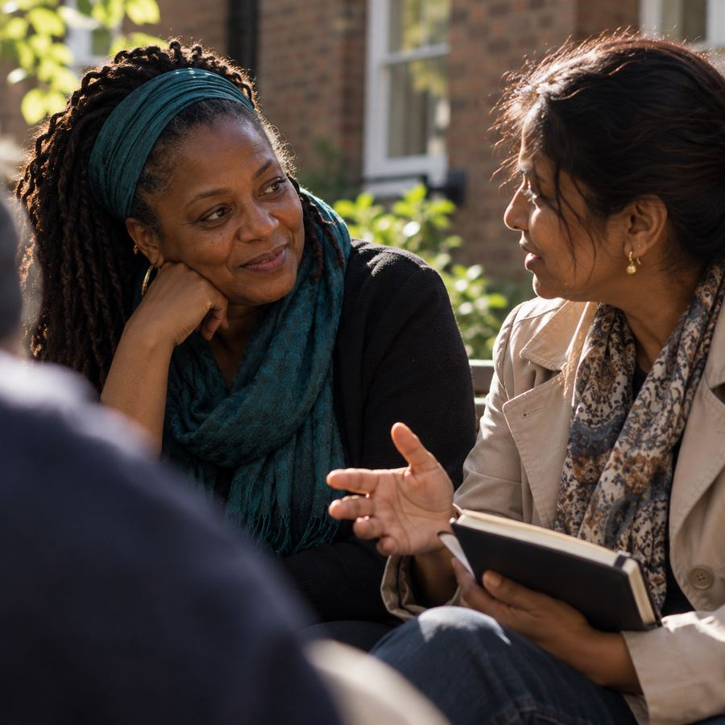
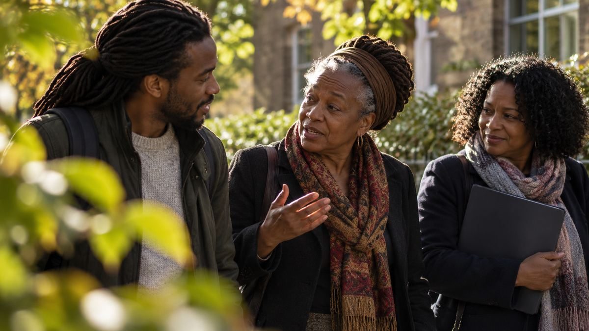
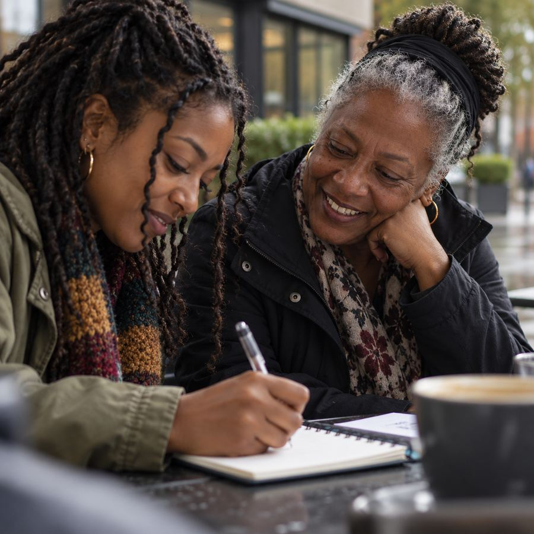
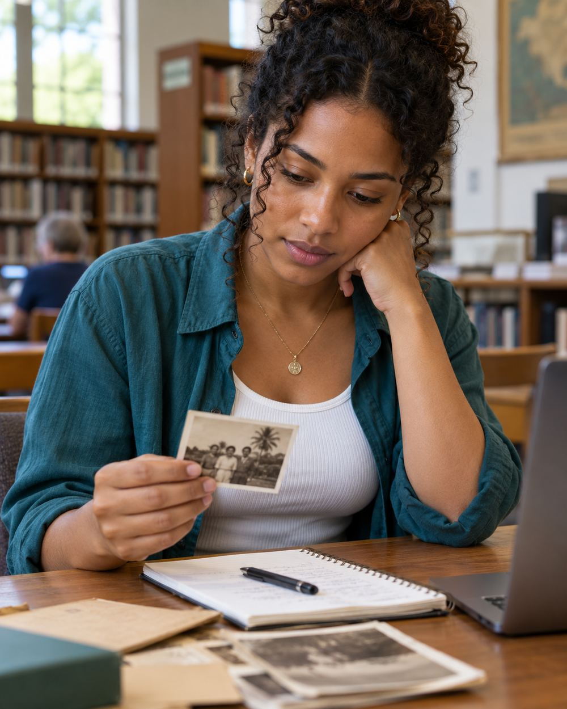
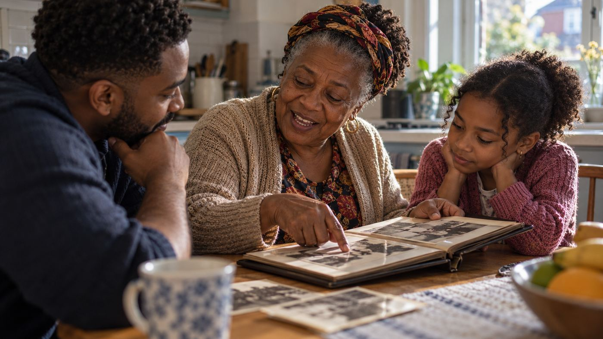

Tracing ancestors back to the period of slavery
Where the usual records stop, and how slave registers and estate papers can take you further back.
We are a group of volunteers who help people trace their families back through Jamaica, Barbados, Trinidad, St Kitts and Nevis and the wider Caribbean. Meet us at Solihull Core Library or on Zoom on the last Saturday of the month. Your first visit is free.
Next meeting Saturday 31 OctoberSolihull Core Library and Zoom


who have spent anything from a few months to forty years tracing Caribbean families. We share what we learn.Some of us are experts in a particular island or in military records. Some of us started last spring. Members join from across the UK, the USA, Jamaica and Trinidad, and everyone is still learning. Bring your question and we’ll help you work out where to look next.
About the group




SaturdayOctober 2026
Come along. Your first visit is free.
Our AGM takes place every May.
Every island kept its records differently, so where you start depends on where your family came from. Each guide covers the key records, the archives, what you can search online and who in the group knows that island best.
You don’t need a subscription or any experience. You need a notebook, some patience and the people in your family who remember.

Start with yourself, then your parents and grandparents. Names, dates, places, and any certificates you have at home.
Ask about names, villages, churches and nicknames, and how the family came to Britain or wherever they settled. Record it if they’re happy for you to.
Put everything on a pedigree chart so you can see what’s missing. Our charts are free to download.
Many Caribbean births, marriages, deaths and church registers are free on FamilySearch, and every Solihull library gives free access to its digitised collections.
When you get stuck, come to a meeting. Someone in the room has usually been stuck in the same place.
Where the usual records stop, and how slave registers and estate papers can take you further back.

How one of our members traced her family from Montserrat back to Africa, and the records that got her there.
Finding Caribbean soldiers in military records, and the story behind the photograph of Dennis carrying the regiment’s standard in Belgium.
Between us we cover Jamaica, the other islands and military records. Tell us who you’re looking for and what you’ve tried so far, and we’ll pass your question to the person best placed to help. We’re all volunteers, so a reply can take a little while.
Ask a research questionCome to a meeting first and see if we’re for you. If we are, membership is paid through the Family History Federation. Our AGM is held every May, and committee roles open up each year if you’d like to get more involved.

Our meetings happen at Solihull Core Library. At our request it became a FamilySearch affiliate in 2011, and every Solihull library now gives free access to FamilySearch’s digitised records. The library also gives us space for a Black History Month exhibition each year.
Why Are West Indians in this Country. We have worked alongside each other since around 2010, promote each other’s events, and host the Windrush Dinner and Dance together every June.
We are a member society of the Federation, which promotes family history research and handles our membership payments.